第26章：小工具¶
自从苹果在2020年WWDC平台国情咨文中展示了其新的主屏幕小部件后，每个人都在创建它们。这绝对是对RWFreeView的有益补充，为raywenderlich.com的免费剧集提供方便但低调的通知。而且，它让你的用户快速访问你的应用程序。
Note
WidgetKit的API目前仍在继续发展，这可能会导致破坏你的代码的变化。自从WWDC演示以来，苹果的模板代码已经改变了几次。你可能仍然会遇到一些不稳定的情况。这就是说，Widget是很酷的，而且很有趣!
开始使用¶
打开启动项目或继续使用前一章的应用程序。
WidgetKit¶
WidgetKit是苹果公司的API，用于向你的应用程序添加小工具。小工具扩展模板帮助你创建一个条目时间线。你决定你想显示的应用程序数据和条目之间的时间间隔。
而且，你为你想支持的每种尺寸的小工具--small、medium、large--定义一个视图。
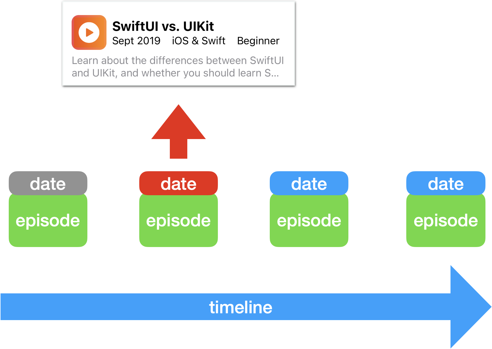
以下是创建一个小部件的典型工作流程：
- 在你的应用程序中添加一个小部件扩展。配置小组件的显示名称和描述。
- 从你的应用程序中选择或调整一个数据模型类型来显示在小组件中。创建一个时间线条目结构：一个
Date加上你的数据模型类型。为快照和占位符条目创建样本数据。 - 决定是否支持所有三种小组件尺寸。创建
small、medium和/或large视图以显示一个或多个数据模型值。 - 创建一个时间线，以提供时间线条目。决定刷新策略。
添加小部件扩展¶
➤ 首先用File ▸ New ▸ Target… 来添加小组件扩展。
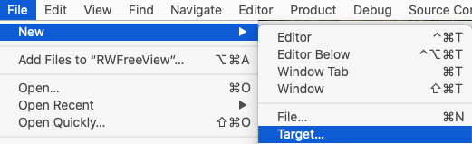
➤ 搜索widget，选择Widget Extension，然后点击Next：
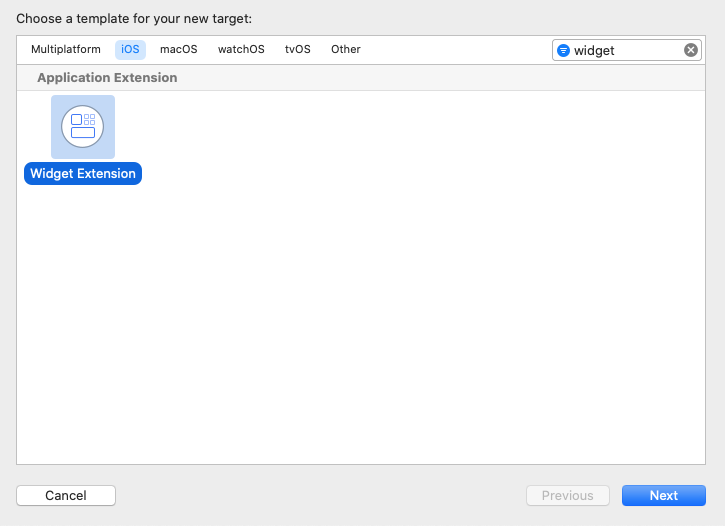
➤ 命名为RWFreeViewWidget，选择你的团队，并确保不选中Include Configuration Intent：
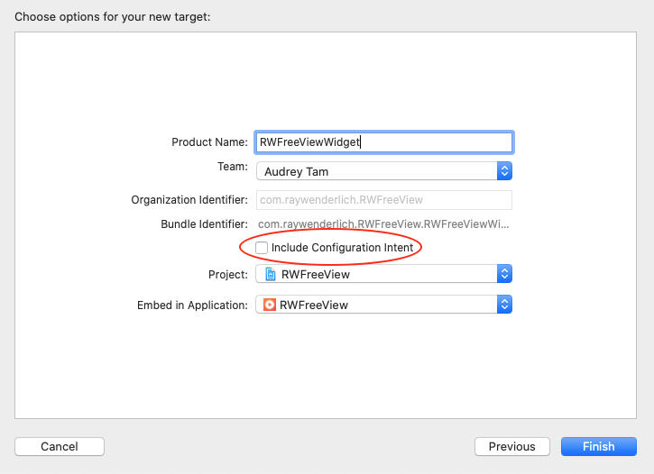
有两种小组件的配置：静态的和意图的。具有IntentConfiguration的小组件使用Siri意图，让用户定制小组件的参数。你的RWFreeView小组件将是静态的。
Note
IntentConfiguration在我们的教程《Widgets入门》bit.ly/2MS7K9U中有所涉及。
➤ 点击完成并同意激活方案对话框：
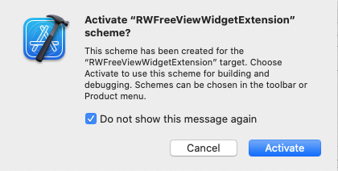
配置你的小部件¶
一个名为RWFreeViewWidget的新目标组出现在项目导航器中。它包含一个Swift文件。
➤ 打开RWFreeViewWidget.swift，然后找到RWFreeViewWidget并编辑最后两个修改器：配置显示名称和描述。
@main // 1
struct RWFreeViewWidget: Widget {
let kind: String = "RWFreeViewWidget"
var body: some WidgetConfiguration {
StaticConfiguration(
kind: kind,
provider: Provider() // 2
) { entry in
RWFreeViewWidgetEntryView(entry: entry) // 3
}
// 4
.configurationDisplayName("RW Free View")
.description("View free raywenderlich.com video episodes.")
}
}
@main属性意味着这是小组件的入口点。该结构的名称和它的kind属性是你在创建它时给它的名称。- 你将在
Provider中定义你的小组件的时间线、快照和占位符条目。 - 你将在
RWFreeViewWidgetEntryView中创建你的小组件视图。 - 在这个结构中，你只需要将名称自定义为
RW免费视图，描述为查看免费的raywenderlich.com视频剧集。你的用户将在小部件库中看到这些。
做一个试运行¶
小组件模板提供了很多模板代码，你只需定制。它开箱即用，因此您现在就可以试运行，以确保在准备测试您的代码时一切都能顺利运行。
➤ 您可以在模拟器中试用您的小部件。如果你想在你的iOS设备上安装你的应用程序，你需要签署两个目标。在项目导航器中，选择顶层的RWFreeView文件夹。在捆绑标识符中使用你的组织而不是"com.raywenderlich"，并为每个目标设置团队。
Note
你的widget的bundle ID前缀必须与你的应用程序的相同。这对RWFreeView来说不是问题，但是，如果你的项目对Debug、Release和Beta有不同的bundle ID，你就需要编辑你的widget的bundle ID前缀以匹配。
➤ RWFreeViewWidget是第二个目标，它可能是当前选择的方案。确保你选择了RWFreeView方案，然后构建并运行。点一下模拟器工具条中的主页按钮，关闭应用程序，然后按一下主窗口的某个空区域，直到图标开始抖动。
➤ 点左上角的+，然后向下滚动找到RWFreeView：
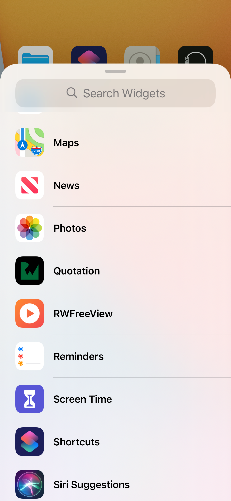
如果你在一个设备上安装了该应用程序，你的画廊看起来就像这样：

➤ 选择它可以看到三种尺寸的快照：
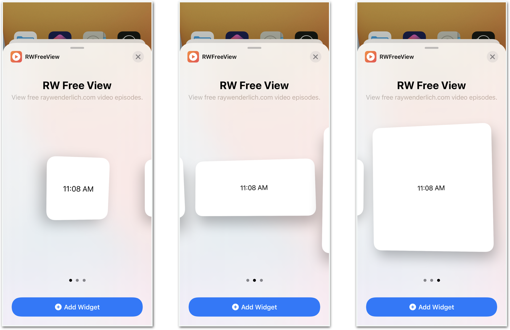
➤ 点击添加小部件，在屏幕上看到你的小部件：
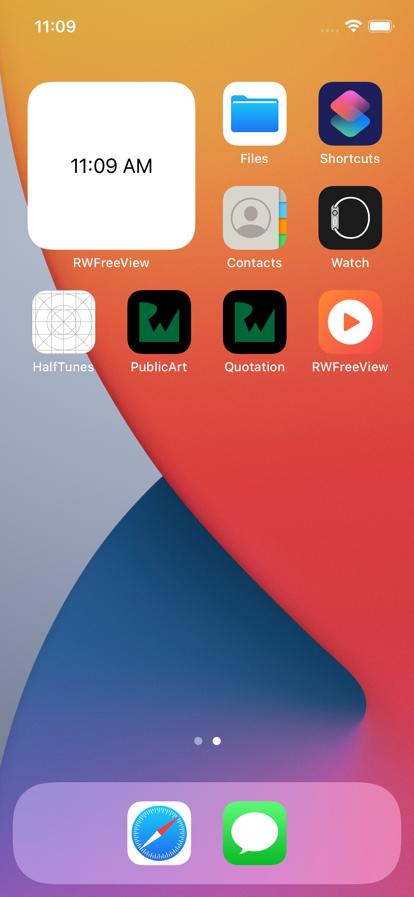
➤ 点右上角的Done。
➤ 点一下小组件，重新打开RWFreeView。
你的小组件可以用了! 现在，你只需要让它显示来自RWFreeView的信息。
➤ 关闭应用程序，然后长按小组件，打开其菜单，选择删除小组件。要养成在确认小部件工作后将其删除的习惯。如果你已经在你的设备上安装了应用程序，这一点尤其重要。当你在开发你的小工具时，它将每三秒钟显示一个新的视图，这对你的电池来说是一个真正的消耗。
从你的应用程序的数据中创建条目¶
让你的小组件显示你的应用程序为每一集显示的一些信息是有意义的。这些属性在Episode结构中。
➤ 在RWFreeViewWidget.swift中，找到SimpleEntry。在date下面添加这一行：
let episode: Episode
一个Xcode错误出现了，因为widget不知道Episode。你需要将Episode.swift添加到widget目标中。
➤ 在项目导航器中，选择Episode.swift。显示文件检查器，检查RWFreeViewWidgetExtension的目标成员框：
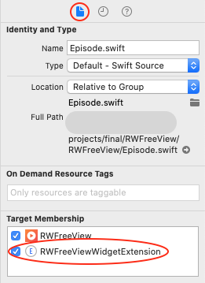
Episode有一个VideoURL类型的属性，并使用Formatter.iso8601来创建releaseData，所以错误信息现在可能出现在Episode.swift中。
➤ 还将VideoURL.swift和FormatterExtension.swift添加到widget目标中。
现在RWFreeViewWidget.swift中的错误信息是预期的关于在调用中缺少参数Episode的参数。缺少的Episod参数用于在placeholder(in:)、getSnapshot(in:completion:)、getTimeline(in:completion:)中创建SimpleEntry实例，并在预览中向下。
首先，你需要一个参数值的样本集。
➤ 在RWFreeViewWidget.swift中，将此属性添加到Provider中：
let sampleEpisode = Episode(
id: "5117655",
uri: "rw://betamax/videos/3021",
name: "SwiftUI vs. UIKit",
parentName: nil,
released: "Sept 2019",
difficulty: "beginner",
description: "Learn about the differences between SwiftUI and"
+ "UIKit, and whether you should learn SwiftUI, UIKit, or "
+ "both.\n" ,
domain: "iOS & Swift")
小工具实际上不需要uri，但默认的Episode初始化器需要这个参数。
➤ 现在逐一修复错误，或者使用Editor ▸ Fix All Issues的这个方便的快捷方式：Control-Option-Command-F。然后用sampleEpisode替换Provider中所有的Episode占位符，用Provider().sampleEpisode替换RWFreeViewWidget_Previews中的占位符。
占位符和快照¶
将Episode属性添加到SimpleEntry中会引起Provider结构的错误，它创建了两个SimpleEntry实例。它的方法是由WidgetKit调用的，而不是由你写的任何代码调用。
为了第一次显示你的部件，WidgetKit调用placeholder(in:)并应用你在上一章末尾使用的相同的redacted(reason:.placeholder)修改器来屏蔽视图的内容。这个方法是同步的：在它完成之前，其他任何东西都不能在其队列中运行。所以不要在这个方法中做任何网络下载或复杂的计算。
每当小组件处于瞬时状态，等待数据或出现在小组件库中时，WidgetKit就会调用getSnapshot(in:completion:)。
创建小组件视图¶
现在你已经决定了要显示什么数据，你需要定义视图来显示它。
首先，在RWFreeViewWidget.swift中，在RWFreeViewWidgetEntryView中，添加这个环境属性：
@Environment(\.widgetFamily) var family
你将使用这个来定制小部件视图，以适应small、medium、large的小部件尺寸。
➤ 还是在RWFreeViewWidgetEntryView中，用这个代码替换body的内容：
VStack(alignment: .leading, spacing: 6) {
HStack {
PlayButtonIcon(width: 50, height: 50, radius: 10)
.unredacted()
VStack(alignment: .leading) {
Text(entry.episode.name)
.font(.headline)
.fontWeight(.bold)
if family != .systemSmall {
HStack {
Text(entry.episode.released + " ")
Text(entry.episode.domain + " ")
Text(String(entry.episode.difficulty ?? "")
.capitalized)
}
} else {
Text(entry.episode.released + " ")
}
}
}
.foregroundColor(Color(UIColor.label))
if family != .systemSmall {
Text(entry.episode.description)
.lineLimit(2)
}
}
.padding(.horizontal)
.background(Color.itemBkgd)
.font(.footnote)
.foregroundColor(Color(UIColor.systemGray))
这只是你的应用程序的EpisodeView的迷你版，为描述留出更多空间。小部件的尺寸没有太多的空间，所以你只显示情节name和released的属性。
同样，你需要向你的widget目标添加一些应用文件，以摆脱错误信息。
➤ 将这些文件添加到widget目标中。PlayButtonIcon.swift，对于Color.itemBkgd，ColorExtension.swift和Assets.xcassets。如果错误信息没有消失，按Command-B来重建项目。
小部件尺寸¶
➤ 现在预览你的小部件。

Note
如果播放按钮的图标看起来不对，不要担心。我遇到过一个间歇性的预览错误，只显示一个橙色的渐变。它在模拟器或设备上看起来很好。
不错，但它看起来有点拥挤，而且一个较长的标题根本就不适合。试试中等大小。
➤ 在RWFreeViewWidget_Previews中，将previews的内容替换为：
let view = RWFreeViewWidgetEntryView(
entry: SimpleEntry(
date: Date(),
episode: Provider().sampleEpisode))
view.previewContext(WidgetPreviewContext(family: .systemSmall))
view.previewContext(WidgetPreviewContext(family: .systemMedium))
view.previewContext(WidgetPreviewContext(family: .systemLarge))
现在你可以一次预览所有三种尺寸：
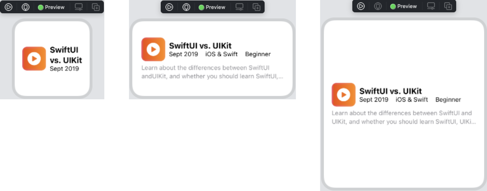
如果你认为其中一个尺寸看起来最好，或者你肯定不想支持其中一个尺寸，你可以把你的小部件限制在特定的尺寸上。
对于RWFreeView，中等尺寸看起来最好，所以你只支持这种尺寸。
➤ 在RWFreeViewWidget中，在StaticConfiguration中添加这个修改器，在description(_:)下面：
.supportedFamilies([.systemMedium])
➤ 建立并运行，然后关闭该应用程序。如果你在这之前安装了一个小的或大的部件，现在它已经消失了。而当你添加一个小部件时，现在唯一的选择是中等大小。

Note
如果你的小组件没有出现在画廊里，或者不能正常工作，请删除应用程序，然后重新建立和运行。如果问题仍然存在，重新启动模拟器或设备。
提供条目的时间线¶
小组件的核心是Provider方法getTimeline(in:completion:)。它为WidgetKit提供了一个有时间戳的条目数组来显示。模板代码创建了一个相隔一小时的五个条目的数组。
let currentDate = Date()
for hourOffset in 0 ..< 5 {
let entryDate = Calendar.current.date(
byAdding: .hour,
value: hourOffset,
to: currentDate)!
let entry = SimpleEntry(
date: entryDate,
episode: sampleEpisode)
entries.append(entry)
}
这段代码用相同的sampleEpisode创建每个条目。你将修改该方法，使其显示episodes数组中的项目。在条目之间等待一个小时对于测试来说是没有好处的，所以你要把时间间隔缩短到几秒钟。
首先，你必须填充你的episodes数组。
创建一个本地EpisodeStore¶
最快的方法--最少的代码行--是在小组件中创建一个EpisodeStore来获取剧集。
➤ 在RWFreeViewWidget.swift中，将这个属性添加到Provider中：
let store = EpisodeStore()
➤ 将EpisodeStore.swift和URLComponentsExtension.swift添加到widget目标中。
➤ 现在，在getTimeline(in:completion:)中，用下面的代码替换for循环：
let interval = 3
for index in 0 ..< store.episodes.count {
let entryDate = Calendar.current.date(
byAdding: .second,
value: index interval,
to: currentDate)!
let entry = SimpleEntry(
date: entryDate,
episode: store.episodes[index])
entries.append(entry)
}
你使用EpisodeStore中的episodes数组来创建一个SimpleEntry值数组，间隔三秒。
➤ 回到EpisodeStore.swift中，添加这个import语句：
import WidgetKit
fetchContents()需要调用WidgetCenter方法来重新加载你的小组件的时间线。
➤ 在fetchContents()中，在DispatchQueue.main.async闭包中添加这一行。
WidgetCenter.shared.reloadTimelines(ofKind: "RWFreeViewWidget")
初始化EpisodeStore会调用fetchContents()来创建episodes数组，但这是一个异步任务，所以用户可能会在episodes数组为空时安装该部件。您可以告诉小组件在数组准备好时重新加载其时间线。
➤ 构建和运行，然后关闭应用程序。寻找你的小部件并添加它。然后看着它显示你的20个免费的流行剧集：
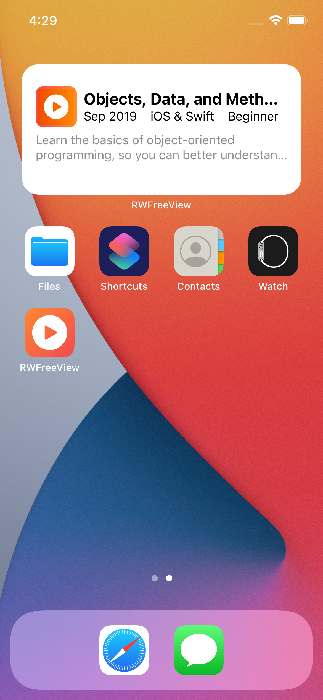
➤ 点一下小部件，重新打开你的应用程序。选择新，等待列表重新加载，然后关闭应用程序。你的小组件仍在显示热门剧集：
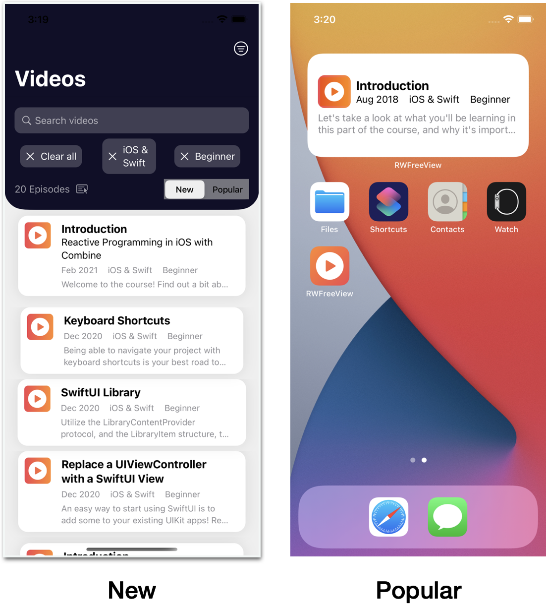
你的小组件的EpisodeStore与你的应用程序的EpisodeStore是分开的，所以它仍然在使用初始选项。你需要在这两个设计选项中做出决定。
- 让小组件的数组与应用程序的数组保持同步。
- 允许用户为小组件设置不同的查询选项。
在本章后面，你将实现一个从小组件到你的应用程序的深度链接，以打开小组件条目的播放器视图。如果小部件的数组可能与应用程序的数组不同，这就没有意义了。所以本章选择了第一个设计方案。
Note
第二个选项要求你创建一个带有IntentConfiguration的部件，这在我们的教程《Getting Started With Widgets》bit.ly/2MS7K9U中有所涉及。
创建一个应用程序组¶
Xcode
应用程序组容器允许应用程序和目标共享资源。
每当用户在你的应用程序中改变一个查询选项时，fetchContents()会下载并解码一个新的episodes数组。为了与你的小组件分享这个数组，你将创建一个应用组。然后，在EpisodeStore.swift中，你将向这个应用组写入一个文件，你将在RWFreeViewWidget.swift中读取该文件。
➤ 如果你还没有签署目标，现在就签署。在项目导航器中，选择顶层的RWFreeView文件夹。对于每个目标，将捆绑标识符的前缀改为你的组织，而不是"com.raywenderlich"，并设置团队。
➤ 现在选择RWFreeView目标。在签名和能力选项卡中，点击+能力，然后将应用组拖入窗口。点击+来添加一个新的容器。
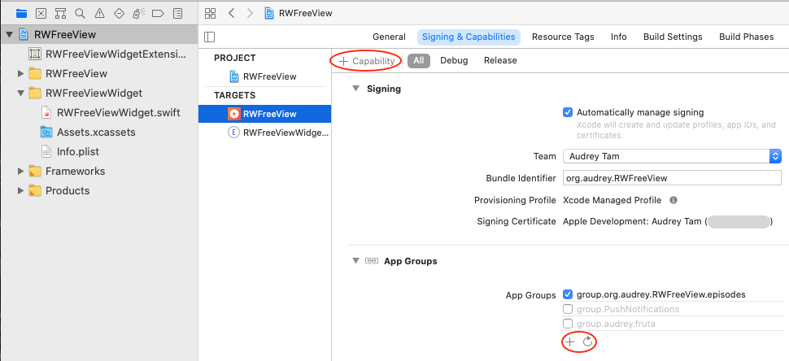
➤ 将你的容器组命名为.your.prefix.RWFreeView.episodes。请确保用你的捆绑标识符前缀替换your.prefix。如果你的组的颜色没有从红色变为黑色，请点击重新加载按钮。
现在选择RWFreeViewWidgetExtension目标并添加应用组能力。如果有必要，滚动浏览应用程序组，找到并选择group.your.prefix.RWFreeView.episodes。
写入应用组文件¶
➤ 在EpisodeStore.swift的顶部，就在import WidgetKit语句的下面，添加这段代码：
extension FileManager {
static func sharedContainerURL() -> URL {
return FileManager.default.containerURL(
forSecurityApplicationGroupIdentifier:
"group.your.prefix.RWFreeView.episodes"
)!
}
}
这只是一些标准的代码，用于获取应用组容器的URL。请确保替换你的捆绑标识符前缀。
在你把contents响应解码成episodes数组之后，写这个应用组文件是有意义的。要把数组写入文件，你要对它进行JSON编码。然后小部件对文件内容进行JSON解码。但是你不能重复使用你已经建立在Episode中的JSON解码代码，因为那是期望由API服务器发送的嵌套JSON结构。
你的小组件只需要几个Episode属性，所以你要创建一个MiniEpisode类型供它使用。
➤ 在Episode.swift中，将这段代码添加到文件末尾，在所有其他大括号之外：
struct MiniEpisode: Codable {
let id: String
let name: String
let released: String
let domain: String
let difficulty: String
let description: String
}
每个属性都是一个String，所以你不需要任何自定义的编码或解码代码。
➤ 在EpisodeStore.swift中，将这个属性添加到EpisodeStore中：
var miniEpisodes: [MiniEpisode] = []
➤ 还将此辅助方法添加到EpisodeStore中：
func writeEpisodes() {
let archiveURL = FileManager.sharedContainerURL()
.appendingPathComponent("episodes.json")
print(">>> \(archiveURL)")
if let dataToSave = try? JSONEncoder().encode(miniEpisodes) {
do {
try dataToSave.write(to: archiveURL)
} catch {
print("Error: Can’t write episodes")
}
}
}
在这里，你将你的MiniEpisode值数组转换为JSON，并将其保存到应用组的容器中。
➤ 在fetchContents()中，在调用WidgetCenter之前，将这段代码添加到DispatchQueue.main.async的闭包中：
self.miniEpisodes = self.episodes.map {
MiniEpisode(
id: $0.id,
name: $0.name,
released: $0.released,
domain: $0.domain,
difficulty: $0.difficulty ?? "",
description: $0.description)
}
self.writeEpisodes()
你把你的Episode值数组映射成MiniEpisode值数组，然后把这个数组写入你的应用程序组文件。现有的对WidgetCenter的调用现在告诉小组件，每当你的应用程序下载并解码了一个新的剧集数组，就重新加载它的时间线。
接下来，去设置widget来读取这个文件。
读取剧集文件¶
➤ 打开RWFreeViewWidget.swift。
你需要把Episode替换成MiniEpisode。
➤ 用这段代码替换sampleEpisode的定义：
let sampleEpisode = MiniEpisode(
id: "5117655",
name: "SwiftUI vs. UIKit",
released: "Sept 2019",
domain: "iOS & Swift",
difficulty: "beginner",
description: "Learn about the differences between SwiftUI and"
+ "UIKit, and whether you should learn SwiftUI, UIKit, or "
+ "both.\n")
MiniEpisode只包含小组件需要的参数，顺序略有不同。
➤ 在SimpleEntry中，将let episode: Episode，改为以下内容：
let episode: MiniEpisode
➤ 现在，在RWFreeViewWidgetEntryView中，difficulty不再是一个选项，所以删除了nil凝聚操作符：
Text(String(entry.episode.difficulty)
.capitalized)
现在，你可以从应用程序组文件中读取你的episodes数组。
➤ 将这个辅助方法添加到Provider中：
func readEpisodes() -> [MiniEpisode] {
var episodes: [MiniEpisode] = []
let archiveURL =
FileManager.sharedContainerURL()
.appendingPathComponent("episodes.json")
print(">>> \(archiveURL)")
if let codeData = try? Data(contentsOf: archiveURL) {
do {
episodes = try JSONDecoder()
.decode([MiniEpisode].self, from: codeData)
} catch {
print("Error: Can’t decode contents")
}
}
return episodes
}
这是从保存在应用组容器中的fetchContents()文件中读取MiniEpisode值。
➤ 从Provider中删除这一行：
let store = EpisodeStore()
你将不再使用本地的EpisodeStore。
➤ 在getTimeline(in:completion:)中，用下面的代码替换for循环：
let episodes = readEpisodes()
for index in 0 ..< episodes.count {
let entryDate = Calendar.current.date(
byAdding: .second,
value: index interval,
to: currentDate)!
let entry = SimpleEntry(
date: entryDate,
episode: episodes[index])
entries.append(entry)
}
你从应用程序组文件中读取episodes数组，并使用它而不是store.episodes。
Note
如果你改变了捆绑标识符，你最终会有两个应用程序。在运行该项目之前，请删除旧的那个。
➤ 构建和运行，然后关闭应用程序。寻找你的小部件并添加它。看着它显示你的20个免费的流行剧集中的几个，然后点击小部件，重新打开你的应用程序。选择新建，等待列表重新加载，然后关闭应用程序。你的小组件现在正在显示最近的剧集。
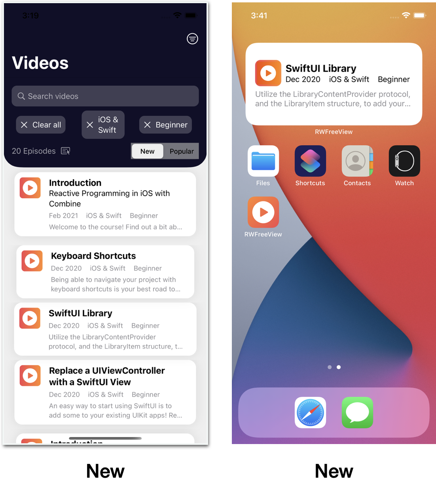
你的小组件工作得很好，你现在可以愉快地把它安装在你的设备上。如果你想这样做，请跳到本章末尾，把时间线改回一小时的间隔。
下一节增加了一个许多用户期待的功能。当你点击小部件时，应用程序应该显示当前小部件条目的PlayerView。
深度链接到你的应用程序¶
你可以为你的widget设置一个深度链接，激活一个NavigationLink，打开一个PlayerView，里面有widget条目的情节。以下是你的工作流程。
- 创建一个URL方案。
- 用
widgetURL(_:)修改你的widget视图的顶级容器视图。 - 在你的应用程序中，实现
onOpenURL(执行:)以激活一个具有正确目标视图的NavigationLink。
创建一个URL方案¶
"URL方案"听起来非常宏大，有点吓人，但是，因为它只是在你的widget和你的app之间，它可以很简单。你基本上是在小组件和应用程序之间创建一个小小的API。小组件需要向应用程序发送足够的信息，以便应用程序知道要显示哪个视图。将这些信息格式化为URL，你可以使用URL或URLComponents属性来提取必要的值。
对于这个应用程序，Episode的id属性可以唯一地识别它。所以打开"SwiftUI vs. UIKit"的URL是简单的：
URL(string: "rwfreeview://5117655")
你可以访问这个id值作为URL的host属性。如此简单!
在你的小部件中¶
➤ 在RWFreeViewWidget.swift中，在RWFreeViewWidgetEntryView中，将这个修改器添加到顶级的VStack中：
.widgetURL(URL(string: "rwfreeview://\(entry.episode.id)"))
Note
在中型和大型部件尺寸中，你可以使用Link(_:destination:)将链接附加到视图的不同部分。
在你的应用程序中¶
在你的应用程序中，你实现了.onOpenURL(执行:)来处理小组件的URL。你把这个修改器附加到根视图，在RWFreeViewApp中，或者附加到根视图的顶层视图。
对于RWFreeView，你要把它附加到ContentView中的NavigationView，因为perform闭包必须给ContentView的@State属性赋值。
首先，你需要以编程方式触发NavigationLink。当你为selection参数设置一个值时，你将使用它的标签选择初始化器来激活它。
➤ 在ContentView.swift中，给ContentView添加这个@State属性：
@State private var selectedEpisode: Episode?
这是selection的参数。你可以通过给这个属性赋值来激活NavigationLink。
➤ 然后，将ForEach闭包中的ZStack替换为以下内容：
ZStack {
NavigationLink(
destination: PlayerView(episode: episode),
tag: episode,
selection: $selectedEpisode) {
EmptyView()
}
.opacity(0)
.buttonStyle(PlainButtonStyle())
EpisodeView(episode: episode)
.onTapGesture {
selectedEpisode = episode
}
}
只要你设置了selectedEpisode，这个NavigationLink就会激活。但只是轻拍一个项目就不会再激活NavigationLink了。所以你用onTapGesture修改EpisodeView来设置selectedEpisode的值。
Xcode抱怨说Episode不符合Hashable，所以要到Episode.swift中使之符合。
➤ 在Episode.swift中，添加这个扩展：
extension Episode: Hashable {
static func == (lhs: Episode, rhs: Episode) -> Bool {
lhs.id == rhs.id
}
func hash(into hasher: inout Hasher) {
hasher.combine(id)
}
}
在这里，你通过实现可等价的静态函数==(_:_:)和hash(into:)，使Episode符合Hashable。
➤ 回到ContentView.swift中，向NavigationView添加这个修改器：
.onOpenURL { url in
if let id = url.host,
let widgetEpisode = store.episodes.first(
where: { $0.id == id }) {
selectedEpisode = widgetEpisode
}
}
你从小组件的URL中提取id值，然后找到第一个具有相同id值的episode。
➤ 构建并运行，等待列表加载，然后关闭应用程序并添加你的小部件。点击一个条目，可以看到它打开了该视频的PlayerView：
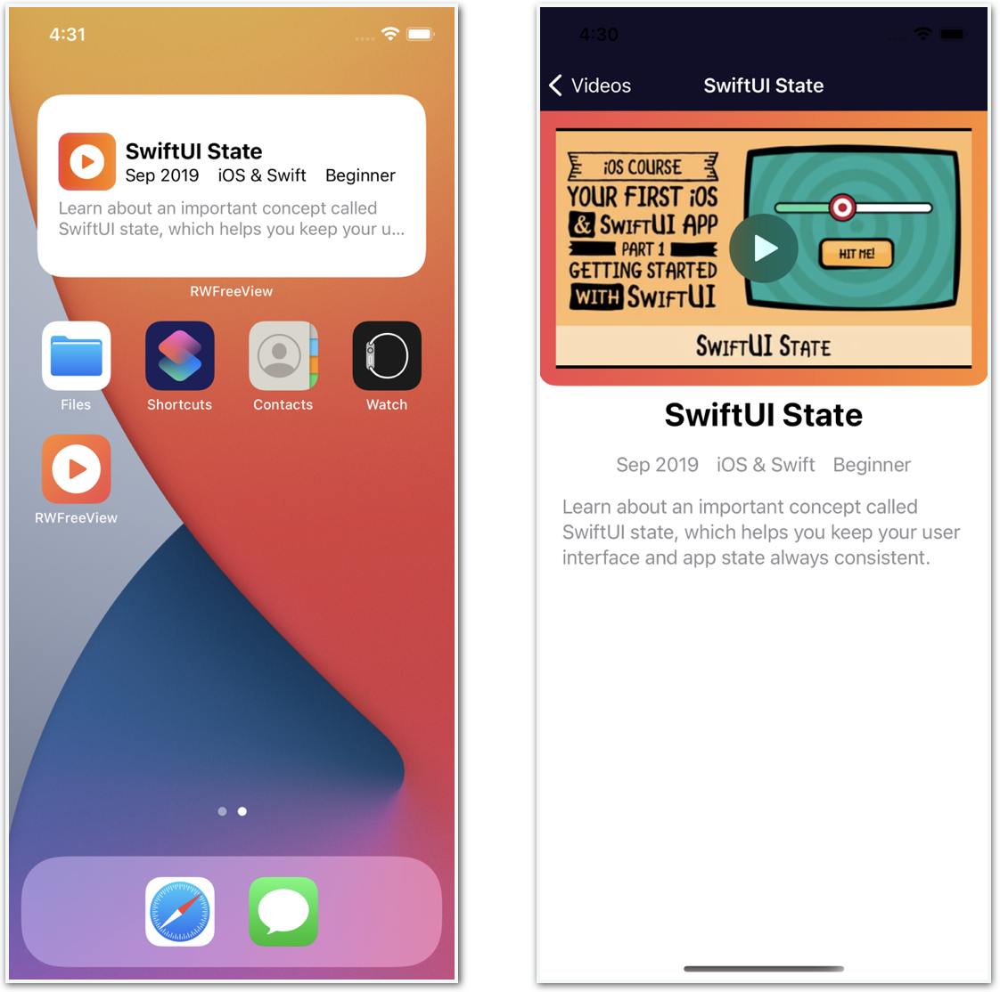
Note
这并不是每次都有效。通常情况下，当一个深层链接不能打开PlayerView时，在应用程序中点击该项目也不能打开PlayerView。这种情况发生在设备上，也发生在模拟器上。NavigationLink有一个错误的行为历史。
最后一件事¶
你一直在你的时间线中使用三秒的间隔，以使测试更简单。你肯定不想用这么短的时间间隔来发布你的小部件。
刷新策略¶
在getTimeline(in:completion:)中，在for循环之后，你创建一个Timeline( entries:policy:)实例。模板将policy设置为.atEnd，所以WidgetKit在当前时间线的最后一个日期后创建一个新的时间线。新的时间线并不立即开始。自己看吧。
➤ 在EpisodeStore.swift中，设置"page[size]": "5"在baseParams中，这样时间线就会在你安装小部件后很快结束。构建并运行，然后添加你的小部件。当它到达第五项时，等待第一项重新出现。在我的Mac上的模拟器中，这需要一到两分钟。
当然，你目前的时间线以3秒的间隔发射，这与正常情况相差甚远。如果有一个更正常的时间间隔，比如一小时，你可能不会注意到任何延迟。
➤ 在EpisodeStore.swift中，将"page[size]"设为20。
还有另外两个TimelineReloadPolicy选项：
after(_:)：指定一个你希望WidgetKit刷新时间线的Date。和atEnd一样，这更多的是对WidgetKit的建议，而不是一个硬性规定。never: 如果你的应用程序使用WidgetCenter来告诉WidgetKit何时重新加载时间线，则使用此策略。这对RWFreeView来说是个不错的选择。你已经看到当你在你的应用程序中改变一个查询选项时，时间线几乎立即重新加载。你可以在你的应用程序中添加代码，在每天的同一时间调用fetchContents()，这也会刷新你的小部件的时间线。
使用正常计时¶
如果你想在你的设备上把RWFreeView当作一个真正的应用程序来使用，把时间线设置成每小时变化一次，而不是每三秒一次。
Note
最终文件夹中的项目仍然每三秒显示一次。
➤ 在RWFreeViewWidget.swift中，在getTimeline(in:completion:)中，将entryDate的代码改为这样：
let entryDate = Calendar.current.date(
byAdding: .hour,
value: index,
to: currentDate)!
你正在恢复模板代码的原始时间。现在，你的小部件将显示相隔一小时的剧集。你可以把它添加到你的设备的主屏幕上，而不用担心过度使用电池。
你也可以删除interval的声明，因为你不再使用它，所以Xcode很有帮助的建议。
关键点¶
WidgetKit是一个新的API。你可能会遇到一些不稳定的情况。你可以通过删除应用程序或重新启动模拟器或设备来解决许多问题。- 要在你的应用程序中添加一个
Widget，请决定你要显示哪些应用程序的数据以及条目之间的时间间隔。然后，为你想支持的每种尺寸的小部件--small,medium,large--定义一个视图。 - 将应用程序文件添加到
widget目标，并调整你的应用程序的数据结构和视图，以适应你的widget。 - 创建一个应用程序组，在你的应用程序和你的小组件之间共享数据。
- 从你的小组件深入链接到你的应用程序是很容易做到的。